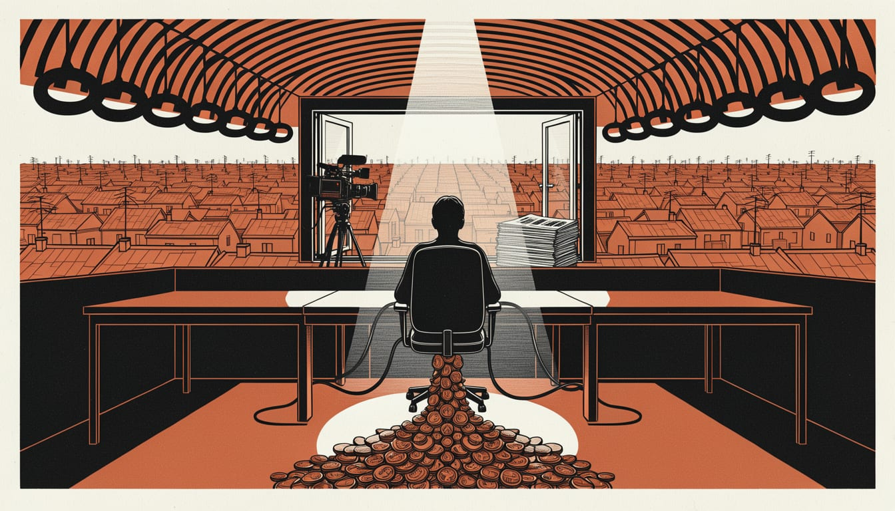

Reform UK builds seven-day Westminster newsroom with studio and news desk
The party is hiring at least 12 staff and has built a Westminster video studio for the launch of Reform TV on YouTube, with a paper it says will reach 15 million homes.

Reform UK is building a seven-day news operation in Westminster with its own studio, digital newsroom, social desk and data function. The party calls it a "national publishing operation" and says workers will act as one team. Most of the money comes from two cryptocurrency donors who have given it £72 million. That sum is more than all UK political parties together received last year.
Reform is advertising at least 12 broadcast and digital roles for the operation, Press Gazette reported. In September, the i and the Telegraph reported the party wanted to use part of its donation money for a Reform UK TV channel. The same reports said it would invest significantly in its media facilities at its Millbank headquarters.
In October, the Spectator reported that Reform UK was preparing an eight-page newspaper called The Reformer, to be launched after its party conference. The party said the paper would be distributed to 15 million households within the coming weeks. Reform also claimed it had placed the biggest paper order in the world this year ahead of the first edition.
An investigation led by Alan Rusbridger said GB News had effectively become "Reform TV", accused it of breaching broadcasting rules and criticised Ofcom for failing to act. GB News rejected the findings as "fundamentally flawed" and lacking "impartiality". In September, experts warned that a broadcasting loophole would let Farage dodge watchdog scrutiny and send unfiltered "propaganda" to voters at the next election, as an online TV channel would sit outside Ofcom's impartiality rules.
The plan belongs to Farage and his allies. The Spectator reported in October that they see owning channels as the way to build a media eco-system more attuned to the party's politics. They believe such channels are necessary, not optional, for that plan. Reform UK has built the Westminster video studio for the launch of Reform TV on YouTube.